Generated by ChatGPT on 2025-12-16
逐字稿下載：ChatGPT_zh_L05_第_5_講_Density_matrix_Holonomic_Quantum_Computation.txt
完整音檔：
Segment 1:
Segment 2:
Segment 3:
Segment 4:
Segment 5:
Segment 6:
Segment 7:
Segment 8:
Segment 9:
Segment 10:
Segment 11:
Segment 12:
Segment 13:
Segment 14:
Segment 15:
本講延續前幾講對 Berry phase 與 Holonomic Quantum Computation (HQC) 的介紹，進一步從 密度矩陣（density matrix）與量子通道（quantum channel）的觀點，系統性建構 Holonomic 量子邏輯閘的實作、等價性與誤差結構。本講的主軸分為三部分：
我們將特別聚焦在：如何將「幾何性」從純態的向量空間提升到「狀態空間 + 通道空間」的層級， 以密度矩陣為基本對象來理解 Holonomic QC 的本質與限制。
考慮一個依賴參數 \(\lambda \in \mathcal{M}\)（\(\mathcal{M}\) 為參數流形）的哈密頓量族： \[ H(\lambda) : \mathcal{H} \to \mathcal{H}, \quad \lambda \in \mathcal{M}. \] 假設存在一個簡併能階 \(E(\lambda)\)，其對應簡併本徵空間維度為 \(k\)： \[ H(\lambda)\,\ket{\psi_a(\lambda)} = E(\lambda)\,\ket{\psi_a(\lambda)}, \quad a=1,\dots,k. \] 這 \(k\) 個態在每個 \(\lambda\) 上張成一個 瞬時簡併子空間 \(\mathcal{H}_\mathrm{deg}(\lambda)\)；其對應的投影算符為 \[ P(\lambda) = \sum_{a=1}^k \ket{\psi_a(\lambda)}\bra{\psi_a(\lambda)}. \] 從密度矩陣的角度，如果我們只關注這個簡併子空間內的量子資訊， 則任意可實作的編碼態密度矩陣可寫為 \[ \rho(\lambda) = P(\lambda)\,\rho(\lambda)\,P(\lambda), \quad \operatorname{Tr}[\rho(\lambda)] = 1. \]
關鍵想法：幾何相位並非作用在單一純態向量上，而是作為 在簡併子空間上的非阿貝爾平行移動，其作用在整個投影空間 （或等價地，子空間內的密度矩陣）之上。
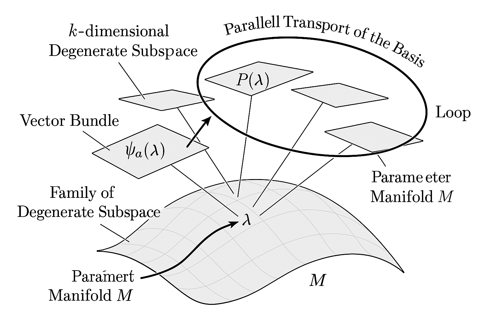
}, and a projector P(lambda). Show a loop in M and parallel transport of the basis along the loop.">在簡併的情況，Berry 連接變成一個 \(\mathrm{U}(k)\) 的規範場（gauge field）： \[ \mathcal{A}_\mu(\lambda)_{ab} = i\braket{\psi_a(\lambda)|\partial_\mu \psi_b(\lambda)}, \quad \partial_\mu \equiv \frac{\partial}{\partial \lambda^\mu}, \] 其中 \(\mu\) 標記參數流形 \(\mathcal{M}\) 的坐標。
對於一條封閉參數路徑 \(\gamma : [0, T] \to \mathcal{M}\)，\(\gamma(0)=\gamma(T)=\lambda_0\)， 非阿貝爾幾何相位（Wilczek–Zee 位相）給出一個 \(\mathrm{U}(k)\) 矩陣 \[ U_\mathrm{g}[\gamma] = \mathcal{P}\exp\left( -\oint_\gamma \mathcal{A}_\mu(\lambda)\,d\lambda^\mu \right), \] 其中 \(\mathcal{P}\) 為路徑序規算符。
物理意義：\(U_\mathrm{g}[\gamma]\) 是在簡併子空間 \(\mathcal{H}_\mathrm{deg}(\lambda_0)\) 上的幾何平行移動單位算符，獨立於動力學相位 （只與所走路徑幾何相關，不依賴演化速率，只要 adiabatic 條件成立）。
在純態情況，若系統初態在簡併子空間內 \[ \ket{\psi_\mathrm{in}} = \sum_a c_a \ket{\psi_a(\lambda_0)}, \] 經過 adiabatic 演化沿 \(\gamma\) 回到 \(\lambda_0\)，最終態為 \[ \ket{\psi_\mathrm{out}} = e^{i\phi_\mathrm{dyn}} U_\mathrm{g}[\gamma]\ket{\psi_\mathrm{in}}, \] 其中 \(e^{i\phi_\mathrm{dyn}}\) 是整體動力學相位，對量子運算沒有實質作用 （可視為全局相位）。
對應到密度矩陣演化，初始態密度矩陣 \[ \rho_\mathrm{in} = \ket{\psi_\mathrm{in}}\bra{\psi_\mathrm{in}}, \] 在簡併子空間內的幾何演化給出 \[ \rho_\mathrm{out} = U_\mathrm{g}[\gamma]\rho_\mathrm{in} U_\mathrm{g}[\gamma]^\dagger. \] 此時整體動力學相位抵消： \[ e^{i\phi_\mathrm{dyn}}\ket{\psi_\mathrm{in}}\bra{\psi_\mathrm{in}}e^{-i\phi_\mathrm{dyn}} = \rho_\mathrm{in}. \] 因此在密度矩陣層級，我們自然而然獲得一個純幾何的單位量子通道： \[ \mathcal{E}_\gamma(\rho) = U_\mathrm{g}[\gamma]\rho U_\mathrm{g}[\gamma]^\dagger. \]
此通道滿足 CPTP（completely positive trace-preserving），且其唯一與參數路徑相關的部分 是幾何矩陣 \(U_\mathrm{g}[\gamma]\)。這也是 Holonomic 量子邏輯閘的數學核心。
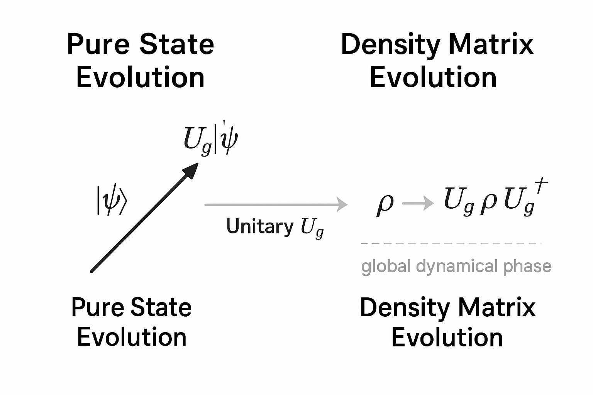
evolving through unitary U_g to another vector, versus density matrix evolution rho -> U_g rho U_g^\dagger. Highlight that the global dynamical phase cancels in the density matrix picture.">上述 Berry 連接 \(\mathcal{A}_\mu(\lambda)\) 依賴於簡併本徵基底的選擇（規範）， 但物理可觀測量——即最終的量子通道——必須規範不變。 考慮本徵基底的一般規範變換： \[ \ket{\psi_a(\lambda)} \longrightarrow \sum_b W_{ab}(\lambda)\ket{\psi_b(\lambda)},\quad W(\lambda)\in \mathrm{U}(k). \] 對應的 Berry 連接變換為 \[ \mathcal{A}_\mu (\lambda) \to W(\lambda)\mathcal{A}_\mu(\lambda) W^\dagger(\lambda) - i\left(\partial_\mu W(\lambda)\right) W^\dagger(\lambda), \] 而幾何相位矩陣則依照規範協變變換： \[ U_\mathrm{g}[\gamma] \to W(\lambda_0) U_\mathrm{g}[\gamma] W^\dagger(\lambda_0). \]
對密度矩陣而言，最終通道 \[ \rho \mapsto U_\mathrm{g}[\gamma]\rho\,U_\mathrm{g}[\gamma]^\dagger \] 在物理解釋上並不依賴對簡併本徵基底的具體選擇， 原因是任意基底變換都對應到邏輯編碼空間內的一個固定同構。 因此 HQC 的幾何結構，其本質是關於投影算符叢（bundle of projectors）的幾何： \[ \lambda \mapsto P(\lambda), \] 而非特定基底向量。
更形式化地，我們可將 Berry 連接重寫為 \[ \mathcal{A}_\mu(\lambda) = i P(\lambda) \partial_\mu P(\lambda) P(\lambda) \] 在 \(\mathcal{H}_\mathrm{deg}\) 上的「限制」，其幾何結構只依賴 \(P(\lambda)\) 的微分。 這在密度矩陣圖像中特別自然，因為編碼態本身可以僅用 \(P(\lambda)\) 與其在子空間的分佈來描述。
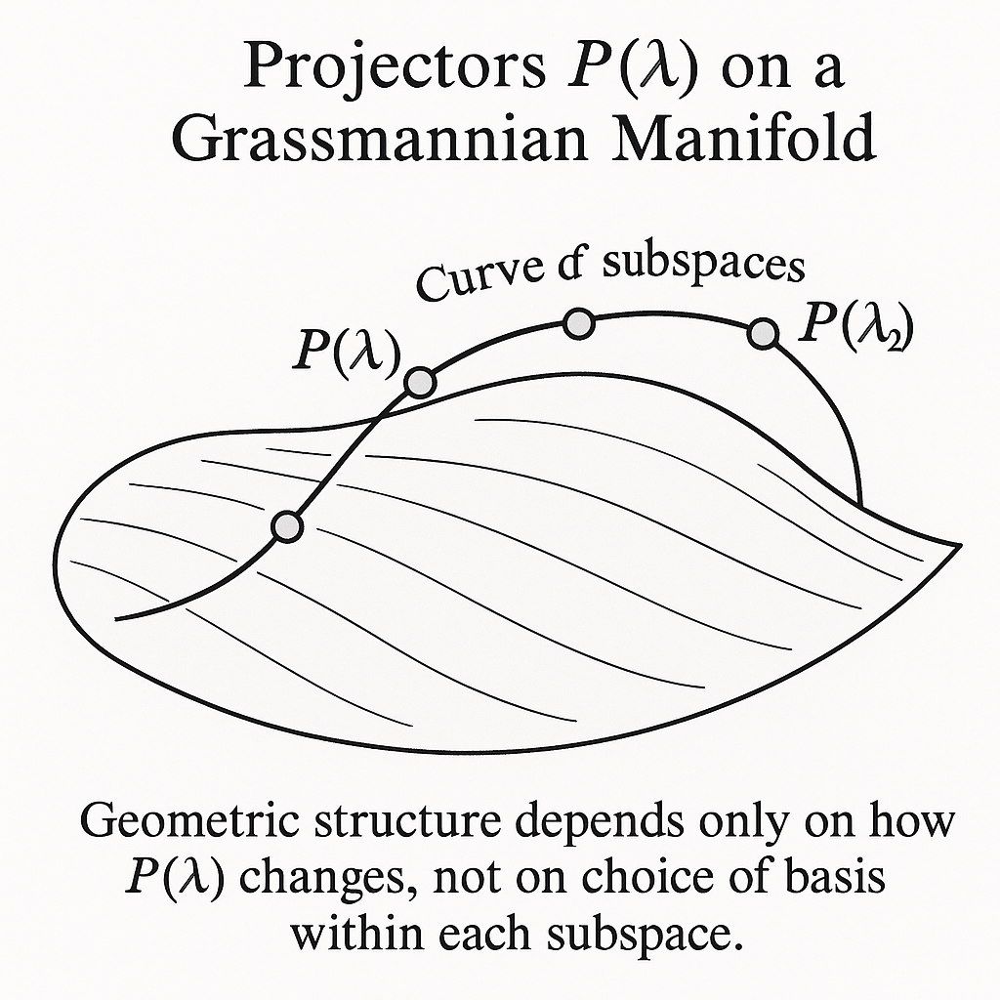
在理想化的封閉系統與完美 adiabatic 極限下， Holonomic 量子閘對應到一個單一 Kraus 算符的 CPTP 通道： \[ \mathcal{E}_\gamma(\rho) = U_\mathrm{g}[\gamma]\rho U_\mathrm{g}[\gamma]^\dagger, \] 其 Kraus 分解只包含一項： \[ K_1 = U_\mathrm{g}[\gamma],\quad \mathcal{E}_\gamma(\rho) = K_1\rho K_1^\dagger, \quad K_1^\dagger K_1 = I. \]
在 HQC 中，我們將邏輯量子位（logical qubits）編碼在某個固定起始參數點 \(\lambda_0\) 對應的簡併子空間中： \[ \mathcal{H}_L \subset \mathcal{H}_\mathrm{deg}(\lambda_0). \] 一般而言 \(P(\lambda_0)\) 的維度 \(k\) 大於邏輯空間維度，因此可以利用 子空間編碼與額外自由度來設計幾何通道。 實際邏輯運算則透過選擇不同的路徑 \(\gamma\) ，產生對應的 \(U_\mathrm{g}[\gamma]\)。
在實際實驗中，系統與環境耦合，導致時間演化不再是單位的，而是由 Lindblad 型主方程控制： \[ \frac{d\rho}{dt} = -i[H(\lambda(t)),\rho] + \sum_\alpha \left( L_\alpha(\lambda(t)) \rho L_\alpha^\dagger(\lambda(t)) - \frac{1}{2}\{L_\alpha^\dagger(\lambda(t)) L_\alpha(\lambda(t)), \rho\} \right). \] 這形成一個時間排序的量子通道： \[ \rho(T) = \mathcal{T}\exp\left(\int_0^T \mathcal{L}_{\lambda(t)} \, dt \right)\rho(0), \] 其中 \(\mathcal{L}_{\lambda}\) 是 Liouvillian 超算符。
當 adiabatic 條件對總超算符成立時，只要 Lindblad 路徑也「緩慢變動」，則在簡併 穩態子空間（或簡併能階子空間）上，同樣可定義一個幾何量子通道： \[ \mathcal{E}_\gamma^\mathrm{(open)} (\rho) = \sum_i K_i[\gamma]\,\rho\,K_i^\dagger[\gamma], \] 其中每個 Kraus 算符中都含有幾何與耗散共同產生的位相與衰減。 純幾何的單位 \(U_\mathrm{g}[\gamma]\) 再也不是唯一成分。
然而，如果環境耦合以某種方式尊重簡併子空間結構，或者藉由工程設計將 Lindblad 算符限制在簡併子空間內（或至多以 adiabatic 态洩漏的形式弱擾）， 則仍可以在有效理論中分解： \[ K_i[\gamma] \approx A_i\,U_\mathrm{g}[\gamma], \] 其中 \(A_i\) 是表徵耗散與去相干的非幾何部份。 這將 Holonomic 通道視為「幾何單位算符 \(\times\) 噪聲」的組合。
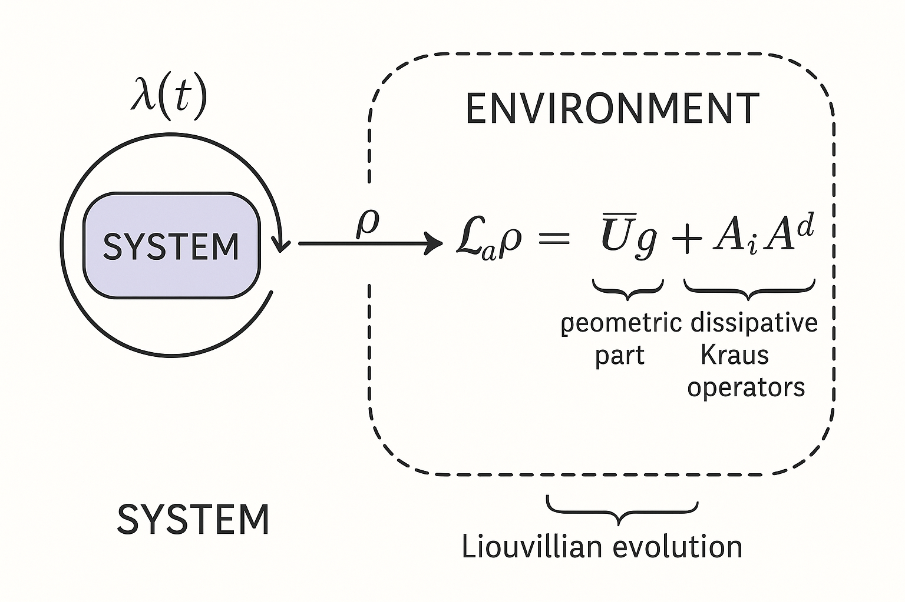
為了將幾何結構完全用密度矩陣描述，我們可採用 Liouville（或 Hilbert–Schmidt）表示， 將密度矩陣視為一個向量 \(\ket{\!\ket{\rho}}\)： \[ \ket{\!\ket{\rho}} = \sum_{ij} \rho_{ij}\,\ket{i}\otimes\ket{j}^*, \] 而超算符 \(\mathcal{E}\) 對應到一個矩陣 \(\mathcal{E}_\mathrm{L}\)，使得 \[ \ket{\!\ket{\rho_\mathrm{out}}} = \mathcal{E}_\mathrm{L}\ket{\!\ket{\rho_\mathrm{in}}}. \]
在封閉系統的 Holonomy 下， \[ \mathcal{E}_\gamma(\rho) = U_\mathrm{g}\rho U_\mathrm{g}^\dagger \quad \Rightarrow \quad \mathcal{E}_{\gamma,\mathrm{L}} = U_\mathrm{g}\otimes U_\mathrm{g}^*. \]
對應的「Berry 連接」也可在 Liouville 空間中定義為 \[ \mathcal{A}_\mu^{(\mathrm{L})} = \mathcal{A}_\mu \otimes I + I\otimes \mathcal{A}_\mu^*, \] 使得 Liouville 空間中的平行移動為 \[ \mathcal{U}_\mathrm{g}^{(\mathrm{L})}[\gamma] = \mathcal{P}\exp\left( - \oint_\gamma \mathcal{A}_\mu^{(\mathrm{L})} d\lambda^\mu \right) = U_\mathrm{g}[\gamma]\otimes U_\mathrm{g}^*[\gamma]. \]
這個表示法有兩個優勢：
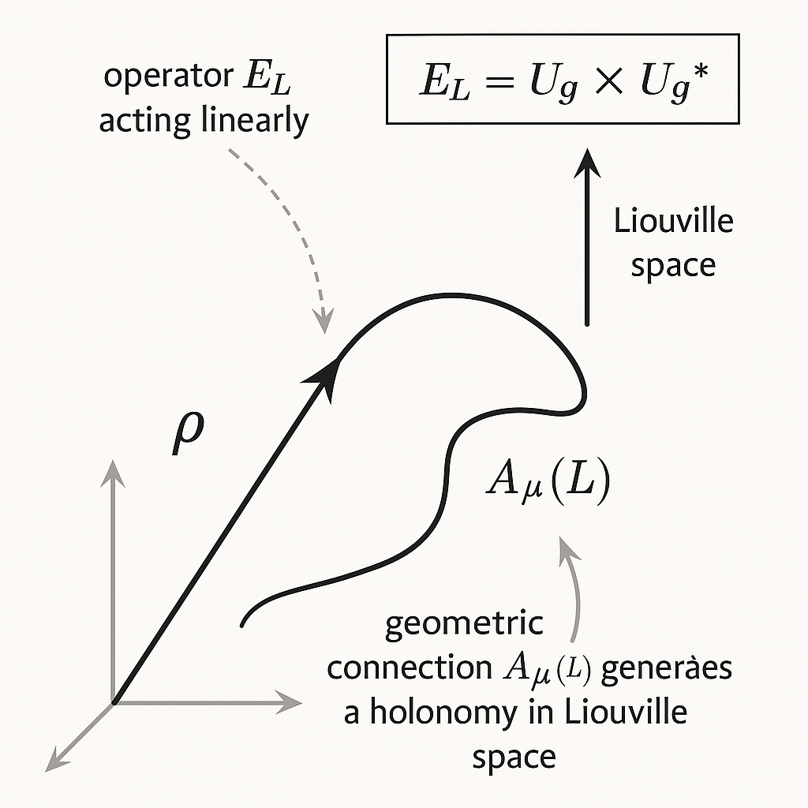
在封閉系統中，標準的 adiabatic theorem 通常表述為： 若系統初態為某一瞬時本徵態，在充足慢的參數變化下，系統將停留在對應的瞬時本徵態（僅多一相位）。 對密度矩陣而言，可將其表示為本徵態上的對角與非對角成分： \[ \rho(t) = \sum_{mn} \rho_{mn}(t) \ket{n(\lambda(t))}\bra{m(\lambda(t))}. \]
在 adiabatic 極限下，假設沒有簡併，且起始 \(\rho(0)\) 僅含對角元素 （熱平衡態或能量本徵態 ensemble），則時間演化會保持近似對角， 每個對角成分只獲得動力學 phase，這在密度矩陣中並不顯現。 因此單能階且不簡併的 Berry 相在密度矩陣層級「被抹平」。
然而在簡併子空間內，幾何相對應到子空間內基底的旋轉， 即使密度矩陣是對角的，仍有可能被混合： \[ \rho(t) = \sum_{ab} \rho_{ab}(t) \ket{\psi_a(\lambda(t))}\bra{\psi_b(\lambda(t))}. \] 經過路徑 \(\gamma\) 回到 \(\lambda_0\) 後， \[ \rho(T) = U_\mathrm{g}[\gamma]\,\rho(0)\,U_\mathrm{g}^\dagger[\gamma]. \] 可見非阿貝爾幾何相在密度矩陣層級完全保留，且甚至影響對角元素。
考慮在簡併子空間 \(\mathcal{H}_\mathrm{deg}(\lambda)\) 的投影 \(P(\lambda)\)。 令 \(U(t)\) 滿足薛丁格方程 \[ i\frac{d}{dt}U(t) = H(\lambda(t)) U(t),\quad U(0) = I. \] 在 adiabatic 極限下，存在分解 \[ U(t) \approx U_\mathrm{dyn}(t)\,U_\mathrm{g}(t), \] 其中 \(U_\mathrm{dyn}(t)\) 是在 \(\mathcal{H}_\mathrm{deg}(\lambda(t))\) 上對應 \(E(\lambda(t))\) 的動力學相： \[ U_\mathrm{dyn}(t) = \exp\left(-i\int_0^t E(\lambda(s))ds\right)\,P(\lambda(t)) + (\text{other levels}), \] 而幾何部分 \(U_\mathrm{g}(t)\) 則滿足 \[ P(\lambda(t))\,U_\mathrm{g}(t)\,P(\lambda(0)) = \mathcal{P}\exp\left(-\int_0^t dt'\, P(\lambda(t'))\dot{P}(\lambda(t'))\right). \]
對於密度矩陣 \[ \rho(t) = U(t)\rho(0)U^\dagger(t), \] 若 \(\rho(0)\) 完全支撐在簡併子空間，則 \[ \begin{aligned} \rho(t) &= U_\mathrm{dyn}(t)U_\mathrm{g}(t)\rho(0)U_\mathrm{g}^\dagger(t)U_\mathrm{dyn}^\dagger(t)\\ &= U_\mathrm{g}(t)\rho(0)U_\mathrm{g}^\dagger(t), \end{aligned} \] 由於 \(U_\mathrm{dyn}(t)\) 在簡併子空間內只是 \(e^{-i\phi_\mathrm{dyn}(t)}P(\lambda(t))\)， 和 \(\rho(0)\) 結合後相位消除。因此對任意 \(\rho(0)\)： \[ \rho(T) = U_\mathrm{g}[\gamma]\,\rho(0)\,U_\mathrm{g}[\gamma]^\dagger. \]
結論：在密度矩陣層級，所有可觀測的 Holonomic 運算皆純幾何， 動力學相自動消去。這對實作 HQC 特別重要，因為可將精準時間控制需求大幅降低， 只要能穩定實現路徑幾何（而非演化速率）。
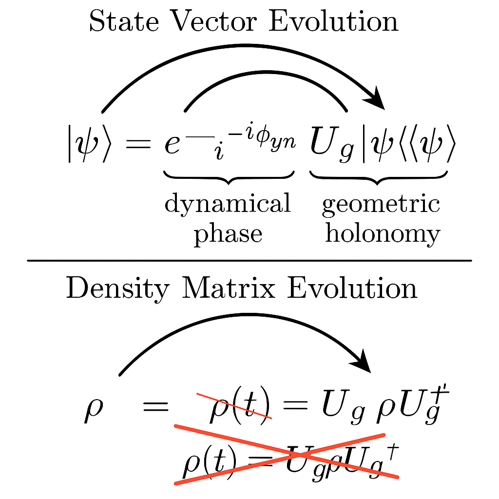
考慮一個典型的 \(\Lambda\)-型三能階原子系統： \(\{\ket{0},\ket{1},\ket{e}\}\)，其中 \(\ket{0},\ket{1}\) 為低能態，\(\ket{e}\) 為高能激發態。 透過兩個外加場耦合： \[ H_\mathrm{int}(t) = \Omega_0(t)\ket{e}\bra{0} + \Omega_1(t)\ket{e}\bra{1} + \text{h.c.} \] 設 \(\Omega_0(t) = \Omega(t)\cos\frac{\theta(t)}{2}\)、 \(\Omega_1(t) = \Omega(t)e^{i\varphi(t)}\sin\frac{\theta(t)}{2}\)。
在共振與適當旋轉框架下，存在一個零能量的「暗態」： \[ \ket{D(\lambda)} = \cos\frac{\theta}{2}\ket{1} - e^{i\varphi}\sin\frac{\theta}{2}\ket{0}, \] 以及一個「亮態」與激發態形成含能級的雙能階子空間。 參數 \(\lambda=(\theta,\varphi)\) 描述了控制脈衝的方向。
編碼：將邏輯量子位編碼於 \(\operatorname{span}\{\ket{0},\ket{1}\}\) 中，暗態 \(\ket{D(\lambda)}\) 對應某一邏輯方向。 透過 adiabatic 改變 \((\theta(t),\varphi(t))\) 並形成封閉路徑， 可實現對邏輯子空間的幾何旋轉。
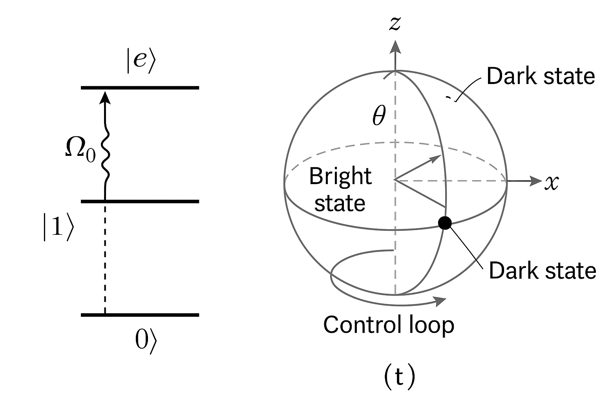
, |1>, and |e>. Show couplings Omega_0 and Omega_1 forming dark and bright states. Plot the dark state as a point on the Bloch sphere parameterized by theta and phi, with a control loop on this sphere.">暗態 \(\ket{D(\theta,\varphi)}\) 張成一維子空間，但由於我們關注整個 \(\{\ket{0},\ket{1}\}\) 子空間（兩維），可以設 \[ \ket{B(\theta,\varphi)} = e^{-i\varphi}\sin\frac{\theta}{2}\ket{1} + \cos\frac{\theta}{2}\ket{0}, \] 使得 \(\{\ket{D},\ket{B}\}\) 為正交完備基底，和 \(\ket{e}\) 共同張成整個三維 Hilbert 空間。 若只考慮零能級簡併空間（例如在非累積能階設計下），可讓 \(\{\ket{0},\ket{1}\}\) 都對應同一能量， 則此二維子空間的 Berry 連接為 \[ \mathcal{A}_\mu(\lambda)_{ab} = i\braket{\psi_a(\lambda)|\partial_\mu \psi_b(\lambda)}, \quad a,b\in\{0,1\}. \]
對於特定設計，我們可選擇 \(\lambda=(\theta,\varphi)\) 的路徑，使得幾何相位在 \(\{\ket{0},\ket{1}\}\) 子空間上對應到 SU(2) Bloch 球的任意旋轉 \(U_\mathrm{g}[\gamma]\in \mathrm{SU}(2)\)。
假設初始邏輯密度矩陣為 \[ \rho_L(0) = \begin{pmatrix} \rho_{00} & \rho_{01}\\ \rho_{10} & \rho_{11} \end{pmatrix} \] 在 \(\{\ket{0},\ket{1}\}\) 基底。 選擇一條控制路徑 \(\gamma\) 對應到幾何單位算符 \(U_\mathrm{g}[\gamma] = U\in\mathrm{SU}(2)\)，例如 \[ U = \begin{pmatrix} \cos\frac{\alpha}{2} & -e^{-i\beta}\sin\frac{\alpha}{2}\\ e^{i\beta}\sin\frac{\alpha}{2} & \cos\frac{\alpha}{2} \end{pmatrix}. \] 則在 adiabatic 理想下，最終邏輯密度矩陣為 \[ \rho_L(T) = U\rho_L(0)U^\dagger. \]
具體例子：令 \(\alpha = \pi,\ \beta = 0\)，則 \[ U = \begin{pmatrix} 0 & -1\\ 1 & 0 \end{pmatrix} \quad\Rightarrow\quad U\ket{0} = \ket{1},\ U\ket{1} = -\ket{0}, \] 這對應到邏輯 Pauli-\(X\)（up to global phase）。 對於任意混合態： \[ \rho_L(0) = \begin{pmatrix} p & c\\ c^* & 1-p \end{pmatrix}, \] 演化後 \[ \rho_L(T) = U\rho_L(0)U^\dagger = \begin{pmatrix} 1-p & -c^*\\ - c & p \end{pmatrix}. \]
注意：
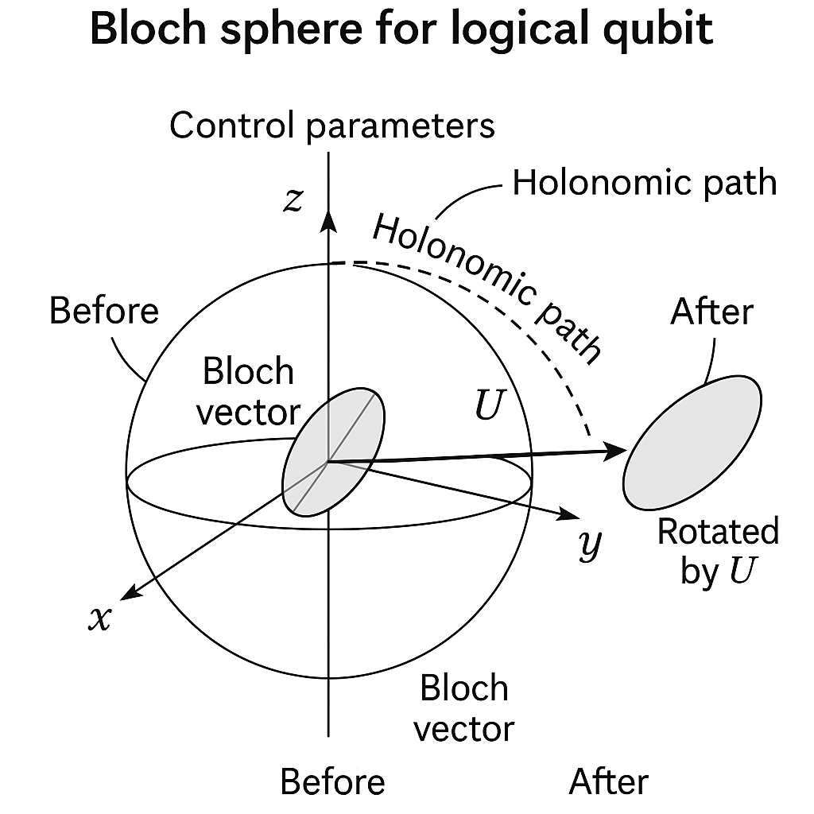
在實作中，參數變化速率有限，違反完美 adiabatic 條件，導致 邏輯子空間 \(\mathcal{H}_L\) 向外洩漏到輔助能階（如 \(\ket{e}\)）： \[ \rho(0) = P_L\rho(0)P_L \quad \longrightarrow \quad \rho(T) = \tilde{U}\rho(0)\tilde{U}^\dagger, \] 其中 \(\tilde{U}\) 是全 Hilbert 空間的單位演化，而非僅限於 \(\mathcal{H}_L\)。 我們可將最終態分解為 \[ \rho(T) = P_L\rho(T)P_L + (I-P_L)\rho(T)(I-P_L) + \underbrace{P_L\rho(T)(I-P_L) + \text{h.c.}}_{\text{coherence between logical and leakage}}. \]
實作邏輯運算時，常假設測量或後處理只關注邏輯子空間，即計算 \[ \rho_L(T) = \frac{P_L\rho(T)P_L}{\operatorname{Tr}[P_L\rho(T)P_L]}. \] 這可被視為一個有效的 CPTP 通道（在條件化測量下）： \[ \mathcal{E}_\gamma^\mathrm{(eff)}(\rho_L) = \sum_i M_i[\gamma]\rho_L M_i^\dagger[\gamma], \] 其中 \[ \sum_i M_i^\dagger[\gamma]M_i[\gamma]\le I, \] 等號在完全沒 leakage 時成立。
在微擾展開中，adiabatic 違反可被視為一個小參數 \(\epsilon\)，leakage 态的佔據量是 \(\mathcal{O}(\epsilon^2)\)，而作用在 \(\mathcal{H}_L\) 的有效幾何運算則為 \[ U_\mathrm{g}^\mathrm{(eff)}[\gamma] = U_\mathrm{g}[\gamma] + \mathcal{O}(\epsilon). \] 因此密度矩陣最終演化可寫為 \[ \rho_L(T) \approx U_\mathrm{g}[\gamma]\rho_L(0)U_\mathrm{g}^\dagger[\gamma] + \delta\rho_L^{(\mathrm{leak})}, \] 其中 \(\delta\rho_L^{(\mathrm{leak})}\) 描述由 adiabatic 不完全性引起的非單位誤差。
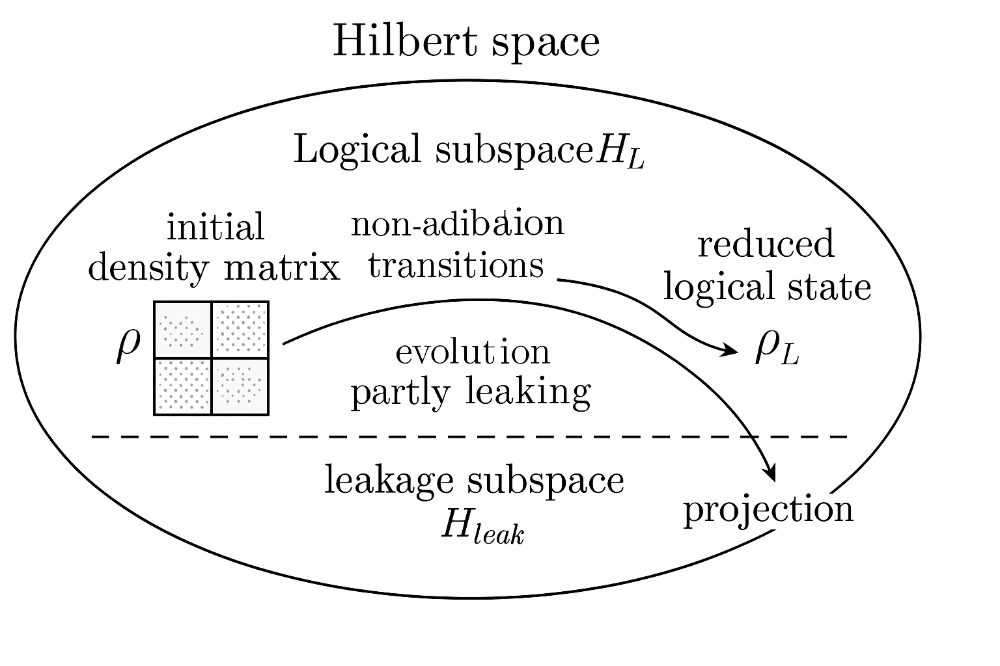
HQC 的一個常被宣傳的優點是「對某些控制誤差具有幾何魯棒性」： 若實際路徑 \(\tilde{\gamma}\) 與理想路徑 \(\gamma\) 有小偏差，但在同一同倫類 （即拓撲上可連續變形而不穿越奇點），則幾何相位只取決於包圍的「幾何量」 （如曲率積分），因此對局部擾動不敏感。
在密度矩陣語言中，這意味著：
因此，從密度矩陣的角度，HQC 的「幾何魯棒性」可理解為： 幾何通道 \(\mathcal{E}_\gamma\) 對某些參數空間中的平滑變形不敏感， 但仍然可能對雜訊敏感，特別是：
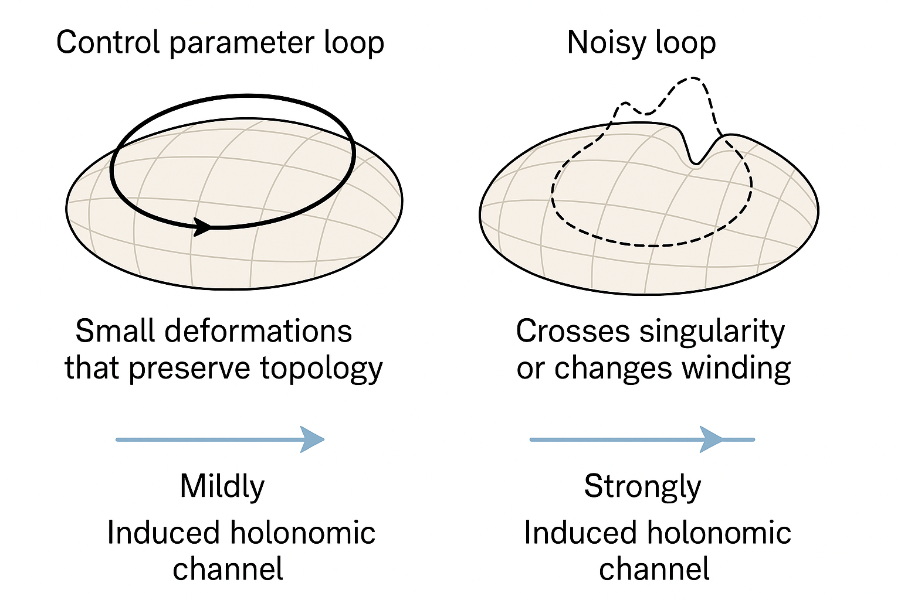
考慮 Lindblad 噪聲主要作用在輔助能階（例如 \(\ket{e}\) 的自發輻射）： \[ L = \sqrt{\kappa}\,\ket{g}\bra{e}, \] 其中 \(\ket{g}\) 是某個穩定基態（可能在邏輯子空間內或外）。 這將導致：
在微擾極限中，假設 \(\kappa\) 小且演化時間 \(T\) 不長， 可將 Lindblad 影響視為一個小通道修正： \[ \mathcal{E}_\gamma^\mathrm{(open)}(\rho) \approx \mathcal{E}_\gamma(\rho) + \delta\mathcal{E}_\gamma^{(\mathrm{diss})}(\rho), \] 其中 \(\mathcal{E}_\gamma\) 是純幾何單位通道。 常見的效應包括：
這些皆可用 Kraus 表示明確寫出，例如： \[ K_0 = \sqrt{1-p}\,U_\mathrm{g},\quad K_1 = \sqrt{p}\,A_1 U_\mathrm{g}, \] 其中 \(A_1\) 將狀態部分投影到某一錯誤子空間，\(p\approx \kappa T\)。 總通道為 \[ \mathcal{E}_\gamma^\mathrm{(open)}(\rho) = (1-p)U_\mathrm{g}\rho U_\mathrm{g}^\dagger + p A_1 U_\mathrm{g}\rho U_\mathrm{g}^\dagger A_1^\dagger. \]
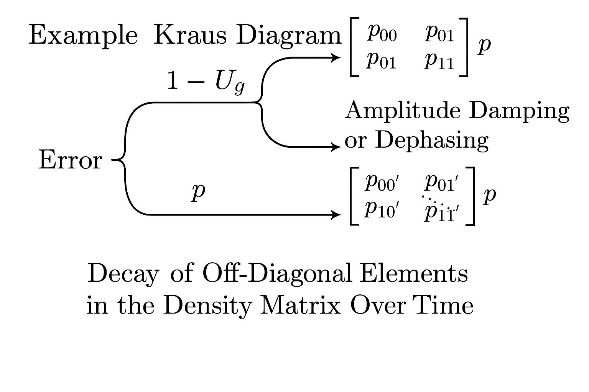
在 HQC 中，對邏輯子空間的不同編碼對應到不同的嵌入 \[ V: \mathcal{H}_L \hookrightarrow \mathcal{H} \] （isometry），例如 \[ V\ket{0_L} = \ket{\phi_0},\quad V\ket{1_L} = \ket{\phi_1}, \] 其中 \(\{\ket{\phi_0},\ket{\phi_1}\}\subset\mathcal{H}_\mathrm{deg}(\lambda_0)\)。 對應的投影算符為 \[ P_L = V I_L V^\dagger = \ket{\phi_0}\bra{\phi_0} + \ket{\phi_1}\bra{\phi_1}. \]
若在物理實作中產生的 Holonomic 演化為 \(\mathcal{E}_\gamma(\cdot)=U_\mathrm{g}[\gamma](\cdot) U_\mathrm{g}^\dagger[\gamma]\)， 在邏輯空間的等效通道為 \[ \mathcal{E}_\gamma^{(L)}(\rho_L) = V^\dagger U_\mathrm{g}[\gamma] V\,\rho_L\, V^\dagger U_\mathrm{g}^\dagger[\gamma] V. \]
若我們改變邏輯編碼 \(V\to V' = VW\)，其中 \(W\in\mathrm{U}(2)\) 是邏輯基底內的變換， 則新實現的邏輯通道為 \[ \mathcal{E}_\gamma^{(L)'}(\rho_L) = W^\dagger \left( V^\dagger U_\mathrm{g}[\gamma] V \right) W\,\rho_L\, W^\dagger \left( V^\dagger U_\mathrm{g}^\dagger[\gamma] V \right) W. \]
因此不同的物理 Holonomy \(U_\mathrm{g}[\gamma]\) 若由於不同的編碼而產生， 在邏輯層級上可能是單位共軛等價，即 \[ \mathcal{E}_\gamma^{(L)'} = \mathcal{U}_W^{-1}\circ \mathcal{E}_\gamma^{(L)}\circ\mathcal{U}_W, \] 其中 \(\mathcal{U}_W(\rho) = W\rho W^\dagger\)。這反映 HQC 的規範冗餘： 物理 Holonomy 與邏輯運算之間不是一一對應，而是 up to 編碼變換的等價類。
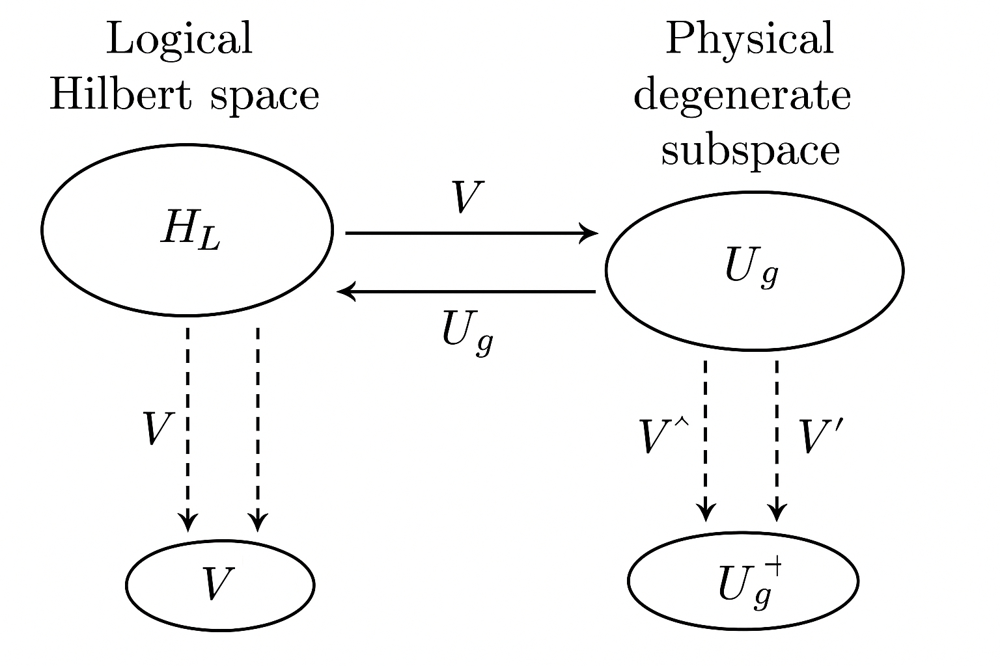
在量子資訊理論中，我們稱兩個通道 \(\mathcal{E}_1,\mathcal{E}_2\) 在邏輯層級等價 up to local unitaries， 若存在單位 \(\mathcal{U},\mathcal{V}\) 使得 \[ \mathcal{E}_2 = \mathcal{U}\circ\mathcal{E}_1\circ\mathcal{V}. \] 在 HQC 中，很自然地出現下列等價關係：
從密度矩陣與通道的觀點，這說明了 HQC 研究中拓撲類別的 Holonomy與 邏輯通道等價類之間的深刻關聯：實際上我們關心的，是在邏輯空間中實作到哪個通道 等價類，而不是哪個具體的物理解。
在 PhD 與研究層級，以下延伸題目值得深入探討：
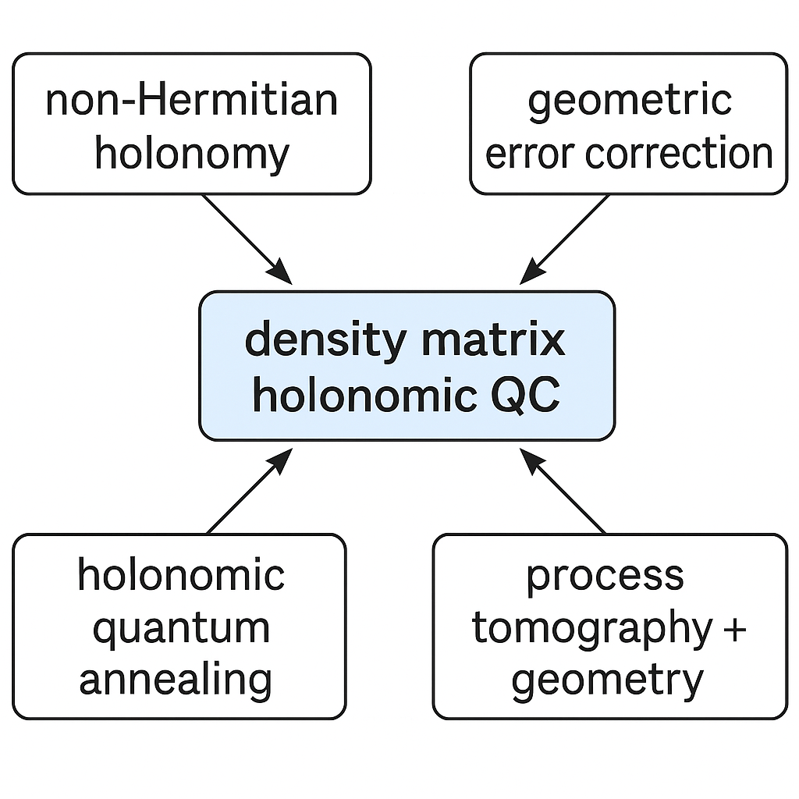
在下一講中，我們將把這裡發展出的密度矩陣與通道觀點， 系統性地應用到 Holonomic Quantum Annealing 的架構之中， 分析在退火過程中的參數路徑如何同時決定能量景觀的探索與幾何 Holonomy 的結構， 並比較其與傳統量子退火及 gate model 的等價關係。